舞台管理组
负责对接活动主办方，确认各项活动细节；统筹现场流程、安排工作人员岗位；做好活动现场情况的全程记录。
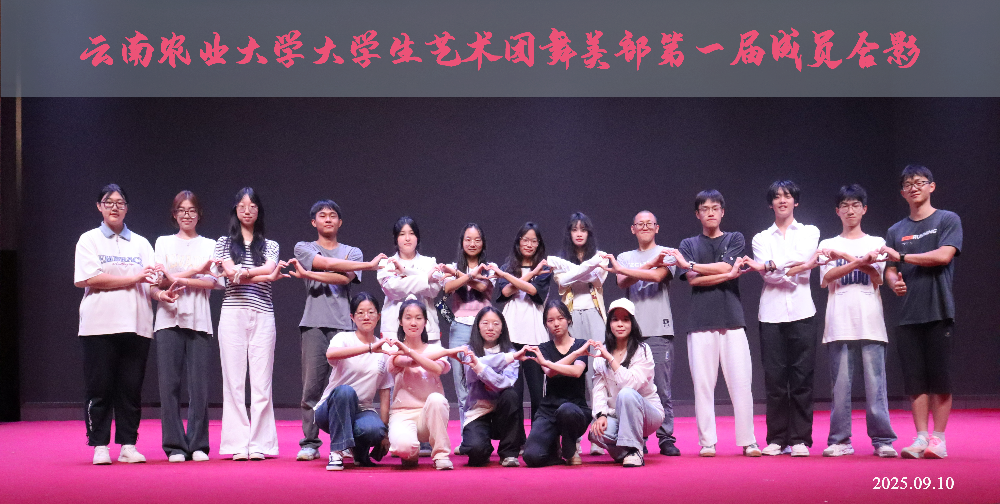

01 / 社团简介
本部门隶属于云南农业大学高水平艺术团，于2024年在校团委老师的指导下在校友会堂303正式成立。自创办以来，部门始终秉持创新发展理念，持续推进扩招与机制改革，不断完善组织架构，稳步实现团队规范化、多元化发展。
为适配校园文艺活动的多元需求，部门在2026年春季学期完成全新扩容升级。在原有舞台管理组、播控组、调音组、灯光组四大核心技术小组的基础上，新增综合组、设计组、妆造组、软件开发组四大职能小组，实现了舞台技术、活动统筹、视觉设计、形象包装、智能运维的全方位覆盖，构建起一套分工明确、协同高效的舞台服务体系。
部门坚守“服务舞台、发现个人闪光点”的核心宗旨，深耕校园文艺后勤保障领域，长期为校内外各类文艺演出、晚会赛事、文艺展演等活动提供专业的舞台配套服务。在长期实践中，部门不断沉淀经验、打磨技术、塑造口碑，持续推进社团品牌建设，逐步形成了技术专业、服务全面、创新进取、务实奉献的鲜明发展特色，成为校园文艺舞台不可或缺的幕后支撑力量。
展望未来，部门将继续深耕舞台服务领域，精进专业技术，创新服务模式，持续优化团队建设与活动服务体系。同时持续挖掘成员潜能，为学子搭建成长实践平台，全力助力校园文艺事业高质量发展。
02 / 部门组成
从舞台技术到视觉设计，分工明确、协同高效。
负责对接活动主办方，确认各项活动细节；统筹现场流程、安排工作人员岗位；做好活动现场情况的全程记录。
调试演出音频设备，把控人声与配乐音效，保障舞台音质稳定。
负责演出视频、演示文稿播放拷贝和操控，把控播放节奏，保障画面流畅无误。
根据节目编排灯光效果，操控灯光设备，烘托舞台整体演出氛围。
统筹后勤事务与资料规整，协助各组衔接，保障活动有序开展。
研发运维舞台配套智能程序，为文艺活动提供数字化技术支撑。
负责演员妆容造型设计、演出服装搭配与保管，贴合节目风格，优化整体舞台观感质感。
负责舞台视觉、海报物料等设计工作，打造优质舞台视觉效果。
03 / 精彩瞬间
每一场演出，都有舞美部在幕后的坚守。
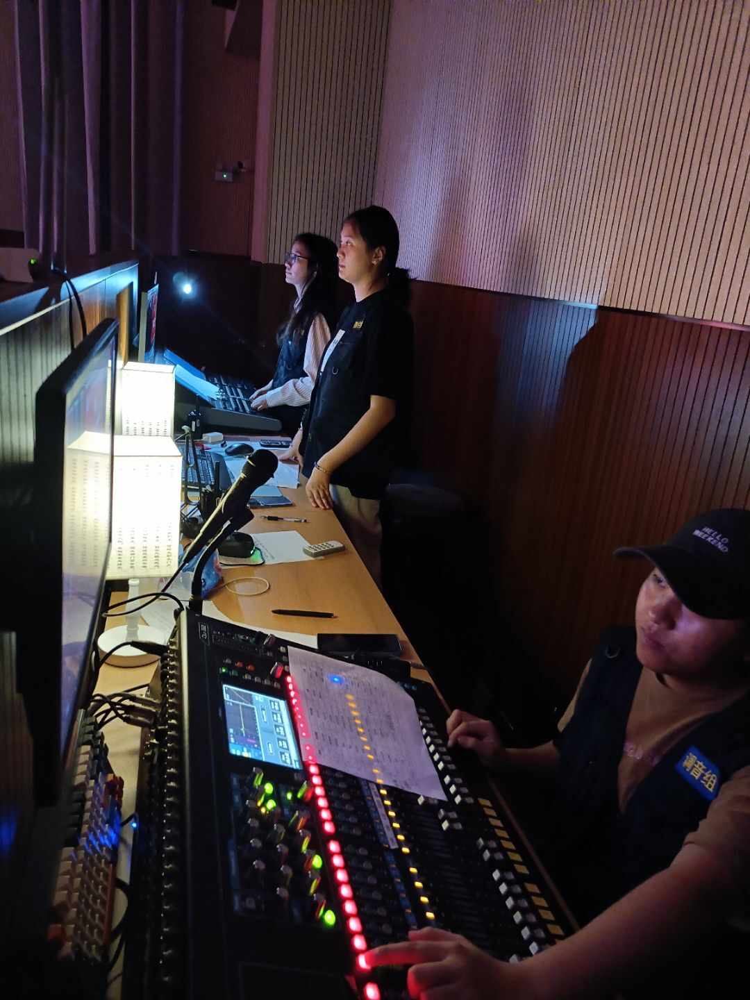
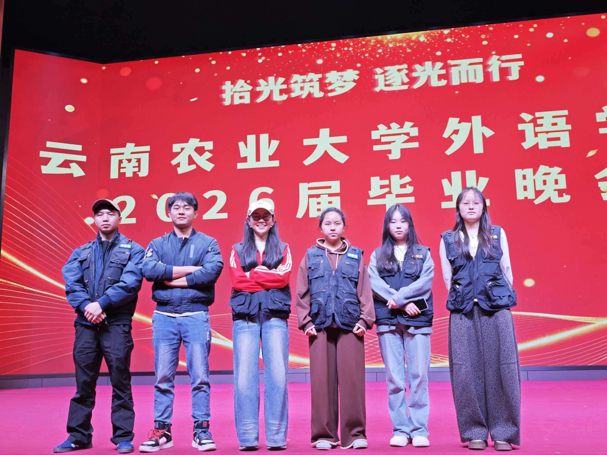
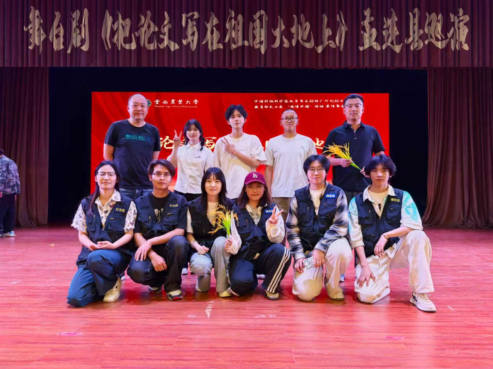
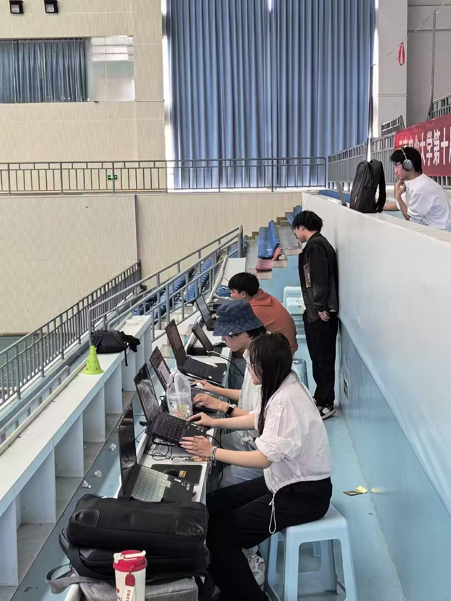
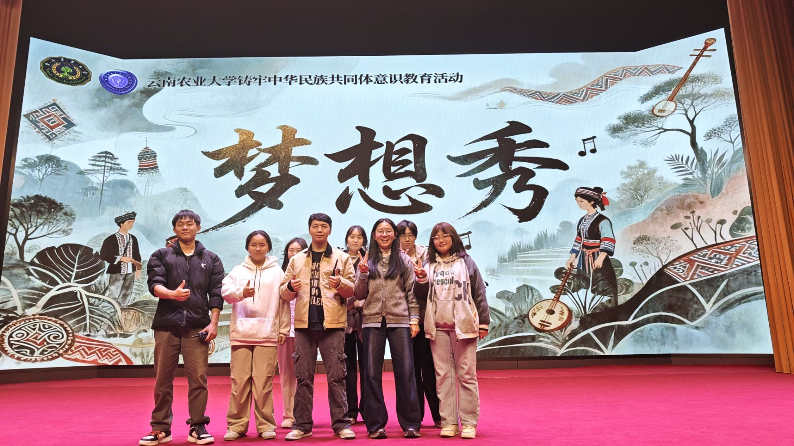
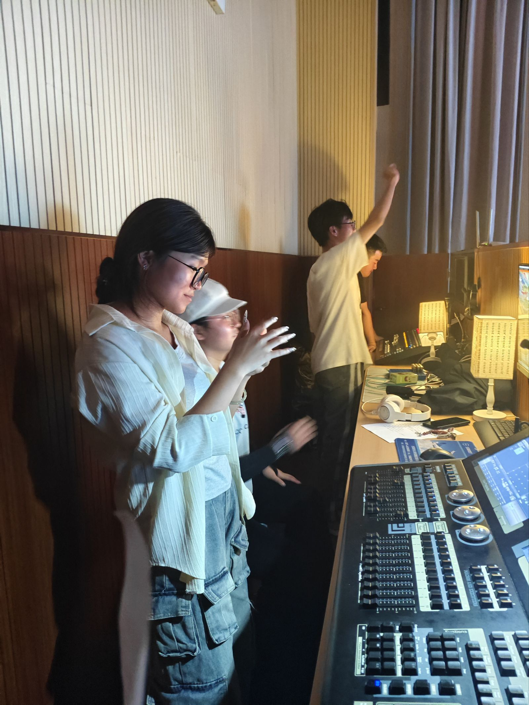
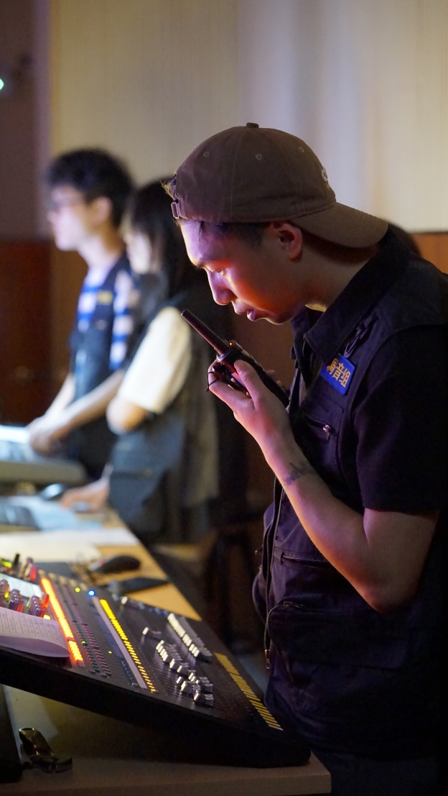
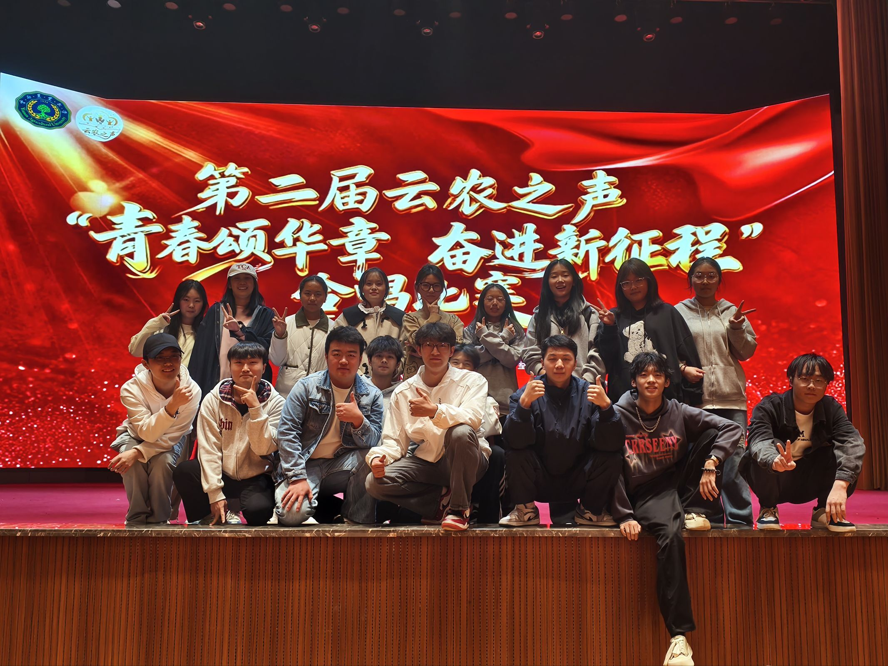
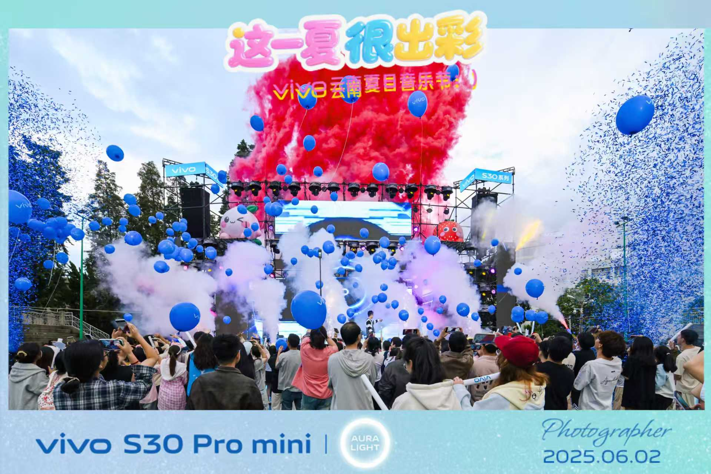
04 / 精彩活动
舞美部为各类演出提供专业舞台服务，持续精进技术。
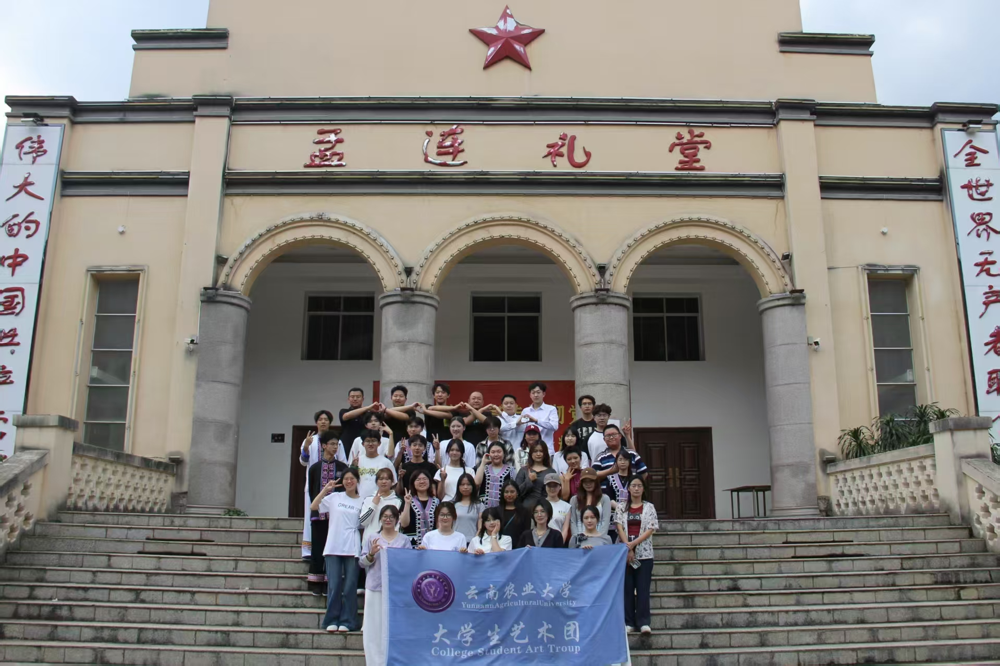
01
4月28日，云南农业大学原创舞台剧《把论文写在祖国大地上》在孟连县开展公益巡演。活动面向当地多所中小学，400余名师生参与，以朱有勇院士事迹为载体，弘扬时代楷模精神，推进思政教育一体化建设。
查看新闻报道02
在第三十六届“青春杯”校园歌手大赛决赛时，舞美部作为艺术团的后勤部门，在现场进形把控播放节奏，保障画面流畅无误。
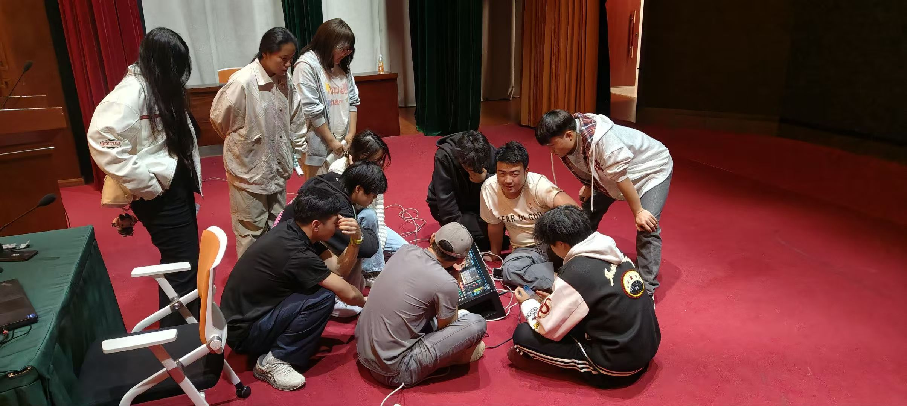
03
为提升调音组成员专业实操能力，夯实舞台音频技术功底，老师对新同学进行专项培训。通过实操讲解、问题答疑与现场实训，帮助组员熟悉设备操作，优化调音技术水平，更好保障各类文艺演出顺利开展。
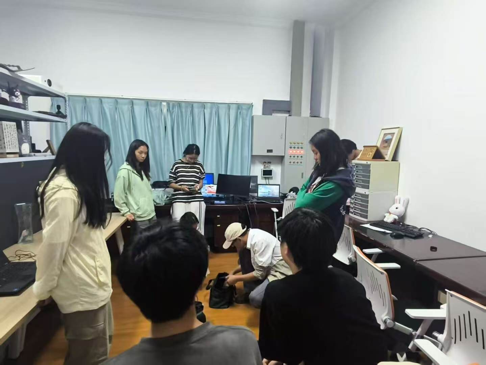
04
为提升播控组成员专业实操能力，老师进行亲自培训，培训围绕播控设备操作、视频素材调试、演出应急处置等内容进行讲解，针对性解答成员实操难题，助力组员精进技能，更好保障各类文艺活动顺利开展。
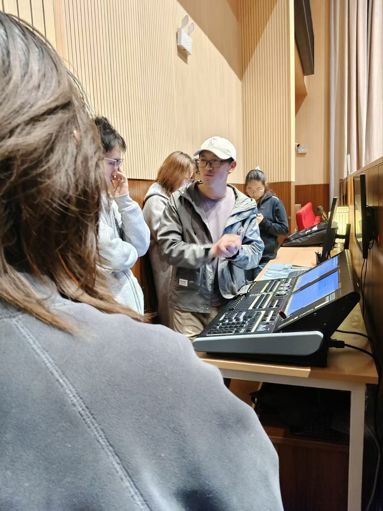
05
为夯实灯光组成员专业实操能力，提升舞台灯光把控水平，指导老师开展专项教学指导。培训围绕灯光设备操作、节目灯光编排、现场应急处置等内容展开，带领成员实战练习，精进灯光技术，助力大家更好完成各类舞台保障工作。